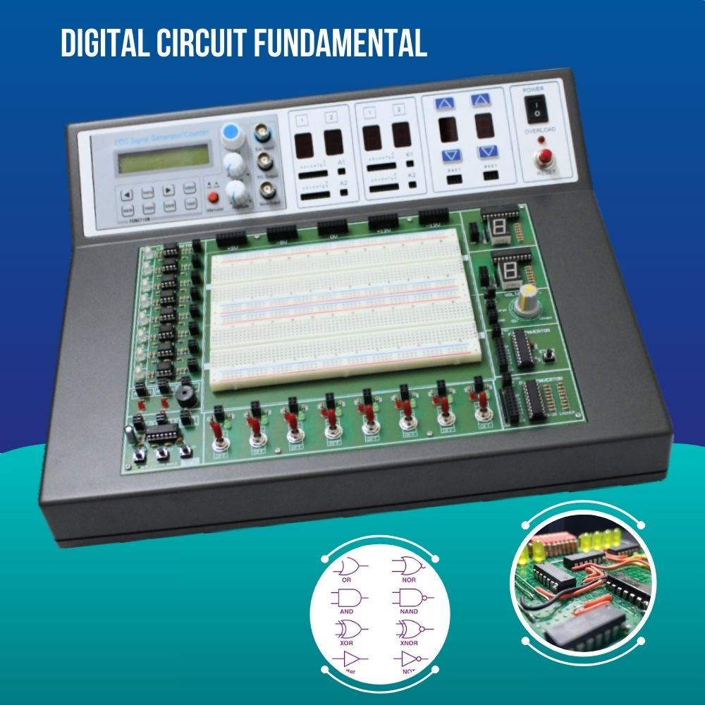
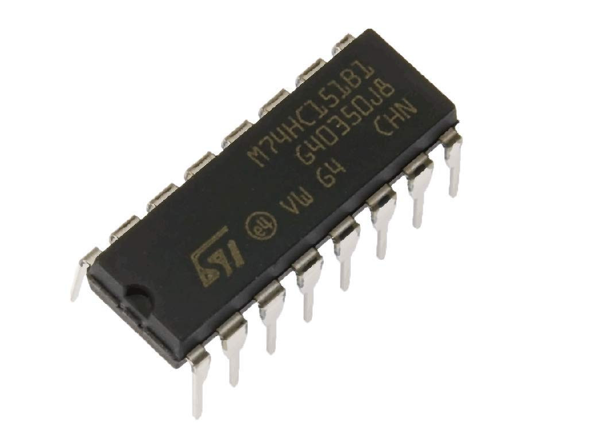
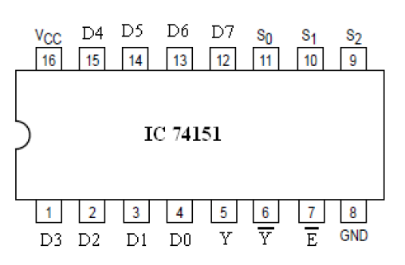

0
สรุปคำตอบก่อน (สำหรับคนรีบ)
รูปที่ 0.1 — รูปคลื่นเอาต์พุต Y และ W วางซ้อนบนอินพุตทั้งหมดบนแกนเวลาเดียวกัน
คำตอบในรูปลำดับลอจิก (ไล่จากซ้ายไปขวา ท่อนที่ค่าเปลี่ยน)
Y 0 1 0 1 0 1 0 1 0 1 0
W 1 0 1 0 1 0 1 0 1 0 1
Y = 11 ท่อน · W = 11 ท่อน · W เป็นส่วนกลับของ Y ทุกจุด (ตรวจแล้วครบ 1,776 พิกเซล)
กฎ 3 ข้อที่ใช้ตลอดข้อนี้
(1) E = 1 → ไอซีถูกปิด → บังคับ Y = 0, W = 1 (ไม่สนใจอะไรเลย)
(2) E = 0 → ไอซีทำงาน → Y = Dn โดย n = 4C + 2B + A
(3) W = Y เสมอ
อ่านหัวข้อ 10 ด้วย!
ถ้าอ่านแค่สรุปนี้แล้วไปสอบ จะพลาด
2 จุดที่โจทย์ตั้งใจดัก —
E เปลี่ยนค่า "กลางช่วง" ไม่ตรงขอบช่วง และ D₀ ไม่ซิงค์กับตัวนับ ดูหัวข้อ
ข้อ 10
1
ปรับพื้นฐาน: Multiplexer คืออะไร? (ทำไมโจทย์ถึงออกแบบนี้)
รูปที่ 1.1 — ซ้าย: MUX เทียบกับสวิตช์หมุน · ขวา: ตารางเลือกช่องของ MUX 8:1คลิกที่ภาพเพื่อขยาย
อ่านหัวข้อนี้ด้วยคำถามเดียวในใจ: "ของที่เรียน ไปผูกกับโจทย์ตรงไหน?"
ทุกหัวย่อยด้านล่างจะปิดท้ายด้วยกล่อง "↔ เชื่อมกับโจทย์" บอกให้ชัดว่า
ความรู้ชิ้นนี้ถูกใช้ตอนไหนของการแก้ข้อนี้ — เพราะโจทย์ข้อสอบไม่เคยถามทฤษฎีลอย ๆ
มันเอาทฤษฎีมา "ต่อกันเป็นวงจร" แล้วถามผลลัพธ์
มัลติเพล็กเซอร์ (Multiplexer, MUX) หรือ อุปกรณ์เลือกข้อมูล (Data Selector)
คือวงจรที่ทำหน้าที่เหมือน สวิตช์หมุนเลือกช่อง :
ส่วนประกอบ หน้าที่ เปรียบเทียบกับสวิตช์หมุน อินพุตข้อมูล D₀…Dn−1 ทางเข้าของสัญญาณ (2n ช่อง) หน้าสัมผัสรอบขอบสวิตช์ ขาเลือกอินพุต (Select) n เส้น บอกว่าให้ช่องไหน "ผ่าน" ตำแหน่งก้านสวิตช์ที่หันไปชี้ เอาต์พุต Y ทางออกเดียวที่ได้ค่าของช่องที่ถูกเลือก ปลายก้านสวิตช์ (ศูนย์กลาง)
MUX 8:1 มีอินพุต 8 ช่อง ⇒ ต้องใช้ขาเลือก n = 3 เส้น (เพราะ 2³ = 8)
1.1 ขาเลือกอินพุต = "เลขที่อยู่" ของช่อง (lecture รูปที่ 3.1–3.2)
สไลด์บรรยาย รูปที่ 3.1 แผนภาพบล็อกและแนวคิดสวิตช์หมุนเลือกช่องข้อมูลของมัลติเพล็กเซอร์ (หน้า 82)คลิกที่ภาพเพื่อขยายต้นฉบับ
เลขฐานสองบนขาเลือก คือ เลขที่อยู่ (address) ของช่องที่จะให้ผ่านไป Y —
นี่คือประโยคเดียวที่ต้องจำให้แม่น:
↔ เชื่อมกับโจทย์ (ใช้ตอนหัวข้อ 4)
ในวงจรของเรา ขาเลือกคือ A, B, C ซึ่งโจทย์ให้มาเป็นรูปคลื่นที่เปลี่ยนค่าไปเรื่อย ๆ —
ไม่ได้นิ่งเหมือนตาราง! เพราะฉะนั้น "ช่องที่ถูกเลือก" จึงเปลี่ยนไปตามเวลา
⇒ ตาราง 1.1 นี่แหละคือเครื่องมือที่เราจะใช้ไล่ "ช่วงเวลาที่ t ใช้ช่องไหน" ในหัวข้อ 4
1.2 ค่าที่ป้อนเข้าช่องได้มีแค่ 3 แบบ (lecture ตัวอย่างที่ 3.3, รูปที่ 3.19–3.20)
สไลด์บรรยาย ตัวอย่างที่ 3.3 รูปที่ 3.19–3.20 แสดงการนำ 74151 มาสร้างฟังก์ชันลอจิก โดยการป้อนค่า 0, 1 และตัวแปรเข้าช่อง D₀…D₇ (หน้า 96)คลิกที่ภาพเพื่อขยายต้นฉบับ
Lecture สอนการนำ MUX ไปสร้างฟังก์ชันลอจิกโดย "ต่อค่า" เข้าช่อง D₀…D₇ ซึ่งมีได้แค่ 3 รูปแบบ:
ตารางที่ 1.2 — 3 แบบของค่าที่ต่อเข้าช่อง (จำไว้ ใช้อ่านวงจร)
แบบที่ต่อ เชื่อมต่อจริงในวงจร ค่าที่ช่องนั้นส่งออก ลักษณะในรูปคลื่นคำตอบ 0 ต่อลงกราวด์ (GND) 0 ตลอดเวลา เส้นตรงแบนต่ำ 1 ต่อเข้า +5 V 1 ตลอดเวลา เส้นตรงแบนสูง สัญญาณ ต่อสายสัญญาณ (หรือผ่านอินเวอร์เตอร์เป็น สัญญาณ ) เปลี่ยนตามเวลา ลอกรูปคลื่นมาแสดง (หรือภาพกลับ)
↔ เชื่อมกับโจทย์ (ใช้ตอนหัวข้อ 3)
เปิดรูปโจทย์ (ปุ่มมุมซ้ายล่าง) ดูวงจรด้านล่าง — จะเห็นครบทั้ง 3 แบบ:
มี +5 V × 2 , กราวด์ × 2 และ สัญญาณ D₀, D₂ ที่แตกไปอินเวอร์เตอร์ด้วย
หน้าที่ของเราตอนหัวข้อ 3 คือทำตาราง "ช่องไหนต่อแบบไหน" ให้ครบทั้ง 8 ช่อง
1.3 ไอซีตระกูล MUX — ทำไมโจทย์เลือก 74151 (lecture หน้า 82)
ข้อความจาก lecture หน้า 82 คัดมาตรงตัว:
ตารางที่ 1.3 — เปรียบเทียบไอซี TTL ตระกูล MUX
ไอซี อินพุตข้อมูล ขาเลือก ลักษณะเอาต์พุต 74150 16 ช่อง 4 บิต แบบกลับค่า (อย่างเดียว) ⇒ ถ้าโจทย์ใช้ตัวนี้ จะไม่มีขา Y! 74151 8 ช่อง 3 บิต ทั้งแบบให้ค่าจริง (Y) และแบบกลับค่า (W) 74152 8 ช่อง 3 บิต แบบให้ค่าจริง (อย่างเดียว) ⇒ ถ้าใช้ตัวนี้ โจทย์ถาม W ไม่ได้
↔ เชื่อมกับโจทย์
โจทย์ถามหา ทั้ง Y และ W ⇒ ตั้งแต่ยังไม่เริ่มแก้ เราก็รู้แล้วว่าต้องเป็นไอซีที่มีเอาต์พุต 2 ขา
ซึ่งในตระกูลนี้คือ 74151 พอดี — และเมื่อหา Y ได้ W ได้ฟรี เพราะ W = Y
1.4 อีนาเบิล active LOW — ทำไมต้องมีขีดบน (lecture หน้า 83, รูปที่ 3.3)
สไลด์บรรยาย รูปที่ 3.3 ตารางฟังก์ชันของ 74150 สอนกฎของขาอีนาเบิล Active-LOW (G = H คือปิดการทำงาน บังคับเอาต์พุต) (หน้า 83)คลิกที่ภาพเพื่อขยายต้นฉบับ
จากตาราง 74150 ใน lecture (รูปที่ 3.3) มีข้อความสอนไว้ว่า:
"อินพุตอีนาเบิลจะเป็นอินพุตที่กำหนดว่าจะให้มัลติเพล็กเซอร์นี้ทำงานหรือไม่ทำงาน…
และทำงานที่สภาวะลอจิกต่ำ" — อ่านว่าอะไร:
อีนาเบิล = สวิตช์เปิด-ปิดตัวไอซีทั้งตัว (ไม่ใช่สวิตช์เลือกช่อง — คนละหน้าที่กับ Select)ทำงานที่ลอจิกต่ำ (active LOW) = ต้องป้อน 0 ไอซีถึงทำงาน · ป้อน 1 = สั่งปิดสัญญาณเตือน: ชื่อขาที่มีขีดบน (G ) หรือมี bubble วงกลมที่ขา = "ทำงานตอน 0" เสมอ
↔ เชื่อมกับโจทย์ (ใช้ตอนหัวข้อ 5 — จุดดักอันดับ 1 ของข้อสอบ)
ในรูปโจทย์ สัญญาณ E เดินเข้าขาที่มี bubble (= G ) ⇒ กฎเดียวกับที่ lecture สอน
ใช้กับ 74151 ทุกประการ: E = 0 ทำงาน · E = 1 ปิด
และเพราะโจทย์วางให้ E = 1 ทั้งช่วงต้นและช่วงท้ายของกราฟ จึงมีผลกับคำตอบ 2 ช่วงเต็ม ๆ
1.5 แผนที่รวม: ทฤษฎี 5 ชิ้น → 5 ขั้นตอนแก้โจทย์
ตารางที่ 1.4 — เส้นทางจากทฤษฎีสู่คำตอบ (สรุปทั้งหัวข้อ 1)
ทฤษฎีจาก lecture ใช้ทำอะไร หัวข้อที่ใช้ ผลลัพธ์ที่ได้ §1.1 ขาเลือก = เลขที่อยู่ ไล่ว่าช่วงเวลาที่ t ใช้ช่องไหน 4 ตาราง 9 ช่วง → ช่อง D₀…D₇…D₀ §1.2 ค่า 3 แบบ (0/1/สัญญาณ) อ่านวงจรว่าแต่ละช่องต่ออะไร 3 Channel Map ครบ 8 ช่อง §1.3 74151 มี Y + W รู้ว่าต้องตอบ 2 รูปคลื่น 2 , 8 Y แล้ว W ตามมา §1.4 อีนาเบิล active LOW เช็กว่าช่วงไหนไอซีปิด 5 รู้ว่าช่วงไหน Y=0 บังคับ NOT gate กลับค่าสัญญาณ เตรียม D₀ , D₂ 6 ครบทุกสัญญาณที่วงจรใช้
เมื่อครบ 5 ขั้น ⇒ ประกอบเป็นคำตอบในหัวข้อ 7 และ 8
2
กฎการทำงานของ 74151 (อ้างอิงจาก lecture) ทำไมต้องมีหัวข้อนี้
หัวข้อ 1 บอกว่า MUX “เลือกช่องตามเลขที่อยู่” — แต่การแก้โจทย์จริงต้องรู้
กฎละเอียดของไอซีที่โจทย์ใช้ : enable ปิดแล้วเอาต์พุตเป็นอะไร W ต่างจาก Y ยังไง
คำตอบอยู่ใน ตารางฟังก์ชัน (function table) ของไอซี ซึ่ง lecture ให้มาในรูปที่ 3.2 (หน้า 82)
และเราจะใช้เป็น “กฎหมาย” ของทั้งข้อ
รูปที่ 2.1 — ตารางแสดงการทำงานของมัลติเพล็กเซอร์เบอร์ 74151
(คัดจากสไลด์บรรยาย หน้า 82 เลขหน้าในเล่ม 71, รูปที่ 3.2 — ทุกขั้นตอนที่เหลืออ้างตารางนี้)คลิกที่ภาพเพื่อขยาย
สไลด์บรรยาย รูปที่ 3.2 ตารางแสดงการทำงานของ 74151 ต้นฉบับจาก Lecture (หน้า 82) พร้อมลายมือเขียนกำกับ *(default)* ที่แถวแรกเมื่อ G = Hคลิกที่ภาพเพื่อขยายต้นฉบับ
อ่านตารางให้ออก — 3 ประเด็นสำคัญ
ประเด็นที่ 1 · แถวแรกสำคัญที่สุด: ขา G มีขีดบน ⇒
เป็นขาที่ ทำงานที่ลอจิกต่ำ (active LOW)
ค่าที่ขา G สถานะไอซี ผลที่เอาต์พุต H (ลอจิก 1) ถูกปิด (ดิสเอเบิล) บังคับ Y = L, W = HL (ลอจิก 0) ทำงานปกติ Y = Dn , W = Dn
สังเกตแถวแรก C, B, A เป็น X = "ไม่สนใจ (don't care)" —
ไม่ว่าขาเลือกจะเป็นอะไร ไอซีก็ส่ง Y = L, W = H เหมือนกันหมด
เพราะโจทย์ทำให้ E = 1 ช่วงต้นและช่วงท้ายกราฟ ถ้าลืมกฎนี้จะตอบผิดทันที 2 ช่วง
ประเด็นที่ 2 · การถอดรหัสขาเลือก: n = 4C + 2B + A
(C มีน้ำหนักมากสุด = MSB, A น้อยสุด = LSB)
ประเด็นที่ 3 · W คือส่วนกลับของ Y: คอลัมน์ W มีขีดบนทุกตัว (D₀ , D₁ , …)
ขณะที่ Y ไม่มีขีด ⇒ W = Y เสมอ
ตรงกับข้อความ lecture หน้า 71: "...มีเอาต์พุตเป็นทั้งแบบให้ค่าจริงและแบบกลับค่า"
ข้อสังเกตจากผู้อ่านต้นฉบับ
ในไฟล์ PDF มีลายมือสีแดงเขียนไว้ข้างแถวแรกของตารางว่า "(default)" —
หมายความว่าสถานะ Y = L, W = H คือ "สถานะพัก" ของ 74151 เมื่อไม่มีการ enable
นั่นยืนยันอีกชั้นว่าเราอ่านตารางตรงกับผู้เรียนคนก่อน
LAB
Virtual Digital Logic Trainer — ต่อ 74151 และ 7404 บนเบรดบอร์ดจริง นี่คือชุดทดลองเสมือนของวงจรข้อ 1 โดยเฉพาะ ไม่ใช่ MUX ตัวอย่างทั่วไป:
ไอซี 74151 และ 7404 เสียบข้ามร่องกลาง สายสีทุกเส้นตรงตามเน็ตลิสต์ และไฟ Logic Monitor แสดง Y/W ที่ขา 5/6 จริง
ชี้สายหรือขาใดก็ได้เพื่อดูชื่อเน็ต แรงดัน และสถานะลอจิก แล้วลองสับสวิตช์เหมือนอยู่หน้าเครื่องในห้องแล็บ
TRAINER POWER · OFF
DIGITAL CIRCUIT FUNDAMENTAL · VIRTUAL TRAINER DT-305241
TTL LAB · +5 V · EXAM 3.40
DDS SIGNAL GENERATOR / SYSTEM LCD TTL OUT
FREE LAB CBA=000
ACTIVE Y=0 W=1
AUXILIARY INSTRUMENTS STANDBY
-- VOLTMETER
8.8 7-SEG BCD
MASTER POWER / PROTECTION
RESET
♪ TACTILE AUDIO · ON
FIXED DC POWER SUPPLY BUS
โหมด 1 · FREE LAB
โหมด 2 · EXAM PLAYER
ทดลองต่อวงจรด้วยมือ: สับ E, C, B, A, D₀, D₂ ที่แผงล่าง หรือกด STEP PULSER เพื่อเลื่อน CBASELECT D₀ · PIN 4
◀
▶ PLAY
▶
↺
SLOT 1 · 1/15 9 slots / 15 micro-slices
E = 1 ปิด 74151 แม้ CBA จะชี้ D₀ — Y ถูกบังคับเป็น 0 และ W เป็น 1
LOGIC MONITOR 0V / 5V
LED 1 · YPIN 5 0
LED 2 · WPIN 6 1
CS2 · MSB 0
BS1 0
AS0 · LSB 0
ĒACTIVE LOW 0
D₀DATA 0
D₂DATA 0
STATUS & SIGNAL FLOW LIVE
ACTIVE CHANNEL
D₀ · PIN 4
D₀ จากสวิตช์ = 0 V
ACTIVE · E=0 LOGIC EQUATION TRACE
CBA=000 → D₀=0 → Y=0 → W=1
DISABLE OVERRIDE
TOOLTIP INSPECTOR
ชี้สายหรือขาไอซี
8-CHANNEL LOGIC ANALYZER · EXAM TIMELINE Y 01010101010 W 10101010101
DATA INPUT SWITCH BANK 0 = GND · 1 = +5V · DEBOUNCED
Ē0 · ACTIVE C / S₂0 · MSB B / S₁0 A / S₀0 · LSB D₀0 · GREEN WIRE D₂0 · YELLOW WIRE STEP PULSER
เปิดภาพอ้างอิงฮาร์ดแวร์และ pinout ที่ใช้สร้างชุดทดลองนี้



ภารกิจแล็บ 60 วินาที
ตั้ง CBA = 100 เพื่อเลือก D₄ แล้วสับ D₀: ดูสัญญาณเดินจากสวิตช์ → 7404 Pin 1/2 → 74151 Pin 15 → LED Y แบบกลับค่า
จากนั้นสับ Ē = 1 — เส้นทางข้อมูลจะเปลี่ยนเป็นสีเตือนและ 74151 บังคับ Y=0, W=1 ทันที นี่คือช่วงที่ 5 และจุดดัก active-LOW ของโจทย์ในฮาร์ดแวร์จริง
3
ขั้นที่ 1 — อ่านวงจร: แต่ละช่องต่อกับอะไร
รูปที่ 3.1 — วงจรจากโจทย์ (รูปที่ 3.40) วาดใหม่พร้อมกำกับค่าที่ต่ออยู่ทุกช่องคลิกที่ภาพเพื่อขยาย — นี่คือรูปที่ต้องอ่านให้คล่องที่สุด
ทำไมขั้นนี้ถึงมาก่อนการดูรูปคลื่น
คำถามของโจทย์คือ “Y เป็นรูปคลื่นแบบไหน” — และ Y จะเป็นรูปคลื่นอะไร
ขึ้นกับสิ่งที่ต่ออยู่ที่ช่องที่ถูกเลือกในขณะนั้น
ยังไม่ต้องรู้เลยว่าช่วงไหนเลือกช่องไหน (เรื่องของหัวข้อ 4)
แต่ต้องรู้ก่อนว่า “ถ้าโดนเลือกช่อง D₄ แล้ว Y จะได้อะไร”
⇒ คำตอบอยู่ในตาราง Channel Map ด้านล่างนี้ ซึ่งจะถูกเรียกใช้อีกทีในหัวข้อ 7 ทุกช่วงเวลา
นี่คือขั้นที่ สำคัญที่สุด ของข้อนี้ — ถ้าอ่านวงจรผิด คำตอบผิดทั้งข้อ
วิธีอ่านเป็นระบบ: (1) ไล่ดูสายควบคุมก่อน → (2) ไล่ช่องข้อมูล D₀–D₇ ทีละช่อง
โดยถามว่า “ช่องนี้ต่อกับอะไร” แล้วจัดเข้าตาราง 3 แบบจากหัวข้อ 1.2
3.1 สายควบคุม 4 เส้น
ขาไอซี ต่อกับ ความหมาย G สัญญาณ E อีนาเบิล — ขามี bubble (วงกลมเล็ก) ยืนยันว่า active LOW A สัญญาณ A ขาเลือก บิตต่ำสุด (LSB) B สัญญาณ B ขาเลือก บิตกลาง C สัญญาณ C ขาเลือก บิตสูงสุด (MSB)
3.2 ช่องข้อมูลทั้ง 8 ช่อง — ตารางที่ต้องอ่านออกจากรูป
ตารางที่ 3.1 — Channel Map: หัวใจของข้อนี้
ช่อง ต่อกับอะไรในรูป ค่าที่ส่งออก Y D₀ สัญญาณ D₀ โดยตรง (มีจุดต่อทึบ) D₀ D₁ +5 V 1 คงที่ D₂ สัญญาณ D₂ โดยตรง (มีจุดต่อทึบ) D₂ D₃ กราวด์ 0 คงที่ D₄ เอาต์พุตอินเวอร์เตอร์ ที่รับ D₀ D₀ D₅ กราวด์ 0 คงที่ D₆ เอาต์พุตอินเวอร์เตอร์ ที่รับ D₂ D₂ D₇ +5 V 1 คงที่
3.3 อ่านสัญลักษณ์ในรูป (สำหรับคนไม่มีพื้นฐาน)
สัญลักษณ์ อ่านว่า ค่าลอจิก ลูกศรชี้ขึ้น + "+5 V" ต่อกับไฟเลี้ยง คงที่ 1 ตลอดเวลาแถบขีดสั้นลง 3 ชั้น (GND) ต่อลงกราวด์ คงที่ 0 ตลอดเวลาสามเหลี่ยม + วงกลมเล็กที่ปลาย อินเวอร์เตอร์ (NOT) กลับค่า สัญญาณที่เข้าจุดทึบ ตรงที่สองเส้นตัดกันจุดต่อ (junction) เชื่อมกัน เส้นตัดกันแบบสะพานข้าม (ไม่มีจุด) crossover ไม่เชื่อมกัน
จุดที่ต้องระวังมากในรูปนี้
สายที่ลากลงจากจุดต่อของ D₀ ไปเข้าอินเวอร์เตอร์ ตัดผ่าน เส้น D₂ โดย ไม่มีจุดต่อ —
สองเส้นนี้ ไม่ได้เชื่อมกัน ตรวจยืนยันด้วยการวิเคราะห์พิกเซลจากภาพต้นฉบับแล้ว
ว่าไม่มี junction dot ที่จุดตัดจริง (ดู VERIFICATION.md)
แบบแผนที่ผู้ออกโจทย์ตั้งใจ
เรียงค่าที่ส่งออกได้: D₀, 1, D₂, 0, D₀ , 0, D₂ , 1 →
สัญญาณจริง 2 ตัวปรากฏ ทั้งแบบปกติและแบบกลับค่า ที่เหลือเป็นค่าคงที่
ข้อนี้จึงทดสอบว่าเราแยกออกไหม ระหว่าง "ช่องที่ค่าเปลี่ยนตามเวลา" กับ "ช่องที่ค่าคงที่"
4
ขั้นที่ 2 — อ่านขาเลือกอินพุต: A, B, C คือตัวนับฐานสอง
รูปที่ 4.1 — รูปคลื่นอินพุตทั้ง 6 เส้นที่โจทย์ให้ (วาดใหม่จากต้นฉบับ)
เส้นประแนวตั้ง = ขอบขาของ A ซึ่งใช้แบ่ง "ช่วงเวลา" ทั้ง 9 ช่วง ·
พื้นชมพู = ช่วงที่ E = 1 (ไอซีถูกปิด)คลิกที่ภาพเพื่อขยาย
รูปที่ 4.2 — ถอดรหัส A, B, C ได้ลำดับการเลือกช่อง D₀ → D₇ แล้ววนกลับมา D₀คลิกที่ภาพเพื่อขยาย
ทำไมต้องแยกรูปคลื่น A,B,C ออกมาพิจารณา
จากหัวข้อ 1.1 เรารู้แล้วว่า “เลขบนขาเลือก = ช่องที่ถูกเลือก”
ปัญหาคือในโจทย์ A, B, C ไม่ได้คงที่ — เปลี่ยนไปเรื่อย ๆ ตามเวลา!
⇒ เป้าหมายของขั้นนี้คือเปลี่ยนรูปคลื่น 3 เส้น ให้กลายเป็น
ตาราง “ช่วงเวลา → เลข n → ช่องที่ถูกเลือก”
เทคนิค: เลือกขอบขาของ A (เร็วที่สุด) เป็นเส้นแบ่ง “ช่วงเวลา”
เพราะภายในหนึ่งช่วง CBA จะไม่เปลี่ยนเลย ทำให้ตารางอ่านได้ครบทุกช่วงพอดี
4.1 สังเกตจังหวะการสลับ — "ลายเซ็น" ของตัวนับ
สัญญาณ จังหวะการสลับ บทบาท A สลับทุก 1 ช่วง (เร็วสุด) บิตต่ำสุด (LSB) B สลับทุก 2 ช่วง บิตกลาง C สลับทุก 4 ช่วง (ช้าสุด) บิตสูงสุด (MSB)
ความถี่ลดลงครึ่งหนึ่งทุกบิตที่สูงขึ้น — นี่คือลักษณะเฉพาะของ
ตัวนับฐานสองขึ้น (binary up-counter)
4.2 ถอดรหัสด้วย n = 4C + 2B + A
ตารางที่ 4.1 — ช่วงเวลาทั้ง 9 ช่วง: ช่วงไหนเลือกช่องไหน
ช่วงที่ C B A n ช่องที่ถูกเลือก 1 0 0 0 0 D₀ 2 0 0 1 1 D₁ 3 0 1 0 2 D₂ 4 0 1 1 3 D₃ 5 1 0 0 4 D₄ 6 1 0 1 5 D₅ 7 1 1 0 6 D₆ 8 1 1 1 7 D₇ 9 0 0 0 0 D₀ (วนกลับ — ตัวนับ 3 บิตล้น)
ตัวอย่างการคำนวณทีละช่วง
ช่วงที่ 5: อ่านจากกราฟได้ C=1, B=0, A=0 → n = 4(1) + 2(0) + 0 = 4 → เลือก D₄6 → เลือก D₆
5
ขั้นที่ 3 — อ่านขาอีนาเบิล E
รูปที่ 5.1 — E มีค่า 1 ช่วงต้นและช่วงท้ายกราฟ
(จุดที่ E เปลี่ยนค่าอยู่ กลางช่วง ไม่ตรงขอบช่วง)คลิกที่ภาพเพื่อขยาย
ทำไมต้องพิจารณา E แยกออกมาต่างหาก
เพราะ E มีอำนาจ “ลบล้าง” ทุกอย่างที่คำนวณมา:
ไม่ว่าช่วงนั้นจะเลือกช่องไหน (ผลจากหัวข้อ 4) และไม่ว่าสัญญาณข้อมูลจะกระโดดแค่ไหน —
ถ้า E = 1 ทุกอย่างเป็นโมฆะ Y = 0 ทันที
⇒ ลำดับการคิดที่ถูกคือ: เช็ก E ก่อนเป็นอย่างแรก แล้วค่อยถามว่าเลือกช่องไหน
(นี่คือเหตุผลที่ในหัวข้อ 7 ทุกช่วงจะเริ่มจากคำถามข้อ ① “E เป็นเท่าไร”)
E ต่อเข้าขา G ซึ่งทำงานที่ลอจิกต่ำ ⇒
ค่าของ E สถานะไอซี ผลที่เอาต์พุต E = 1 ถูกปิด บังคับ Y = 0, W = 1 — ไม่สนใจ C,B,A และไม่สนใจข้อมูลเลย E = 0 ทำงานปกติ Y = Dn ตามช่องที่เลือก, W = Y
5.1 อ่านค่า E จากกราฟได้ 3 ท่อน
เริ่มต้น E = 1 — ครอบช่วงที่ 1 ทั้งช่วง และกินเข้าไปในช่วงที่ 2 ประมาณ 38%ตกลงเป็น E = 0 — ครอบตั้งแต่กลางช่วงที่ 2 ถึงประมาณ 43% ของช่วงที่ 9ขึ้นกลับเป็น E = 1 — ครอบส่วนท้ายของช่วงที่ 9
จุดดักที่ 1 ของข้อสอบ
E เปลี่ยนค่า กลางช่วง ไม่ตรงกับขอบช่วงเวลา!
⇒ ช่วงที่ 2 และช่วงที่ 9 ต้องถูกแบ่งเป็น 2 ส่วนย่อย :
ส่วนหนึ่งไอซีปิด อีกส่วนไอซีทำงาน
ถ้าคิดว่า "1 ช่วง = 1 คำตอบ" จะตอบผิดทั้ง 2 ช่วงนี้แน่นอน
6
ขั้นที่ 4 — เตรียมสัญญาณกลับค่า D₀ และ D₂
รูปที่ 6.1 — สัญญาณที่ใช้จริงในวงจร: D₀, D₀ , D₂, D₂
(สีม่วง = สัญญาณเดิม, สีชมพู = กลับค่าแล้ว)คลิกที่ภาพเพื่อขยาย
ทำไมต้อง "เตรียม" สัญญาณกลับค่าล่วงหน้า
Channel Map (หัวข้อ 3.2) บอกว่าช่อง D₄ = D₀ และ D₆ = D₂
แต่โจทย์ให้รูปคลื่นมาแค่ D₀, D₂ ตรง ๆ — ยังไม่มีใครให้ D₀ , D₂ มา!
⇒ เราต้องสร้างเองจากกฎ NOT gate: พลิกทุกจุด (เดิม 1 → 0, เดิม 0 → 1)
ทำล่วงหน้าเป็นกราฟคู่ขนานแบบนี้เพื่อว่าพอถึงหัวข้อ 7 ช่วงที่ 5 กับ 7
เราแค่ “ลอกเส้น” จากกราฟที่เตรียมไว้ ไม่ต้องมานั่งพลิกค่าทีละจุดกลางอากาศ —
ลดโอกาสพลาดตอนสอบลงเยอะ
สัญญาณ ใช้เข้าช่อง วิธีสร้าง D₀ D₀ ใช้ตามที่โจทย์ให้ D₀ D₄ พลิกกลับ D₀ ทุกจุด D₂ D₂ ใช้ตามที่โจทย์ให้ D₂ D₆ พลิกกลับ D₂ ทุกจุด
สัญญาณ ใช้เข้าช่อง วิธีสร้าง D₀ D₀ ใช้ตามที่โจทย์ให้ D₀ D₄ พลิกกลับ D₀ ทุกจุด D₂ D₂ ใช้ตามที่โจทย์ให้ D₂ D₆ พลิกกลับ D₂ ทุกจุด
6.1 ข้อสังเกตพิเศษที่ตรวจพบจากต้นฉบับ (ด้วยการวิเคราะห์พิกเซล)
ตารางที่ 6.1 — ความสัมพันธ์เชิงเวลาที่ตรวจพบ
ข้อสังเกต รายละเอียด นัยต่อการเฉลย (ก) D₂ = D₀ ÷ 2ขอบของ D₂ ตรงกับขอบขาลง ของ D₀ ทุกจุด (6 จุด ตรงเป๊ะ) วาดกราฟได้สอดคล้องกัน ใช้ตรวจทานข้อผิดพลาด (ข) D₀ ไม่ซิงค์ตัวนับคาบของ D₀ ≈ 1.23 เท่าของความกว้างช่วงเวลา Y เปลี่ยนค่าได้หลายครั้งใน 1 ช่วง — ห้ามคิดว่า 1 ช่วง = 1 ค่าคงที่
จุดดักที่ 2 ของข้อสอบ
เพราะ D₀ ไม่ซิงค์กับตัวนับ ⇒ ภายในหนึ่งช่วงเวลา เอาต์พุตอาจเปลี่ยนค่าได้หลายครั้ง
ต้องดูขอบของ D₀ ทุกครั้ง ไม่ใช่ดูแค่ค่าต้นช่วง
7
ขั้นที่ 5 — ไล่คำตอบทีละช่วงเวลา
รูปที่ 7.1 — ภาพรวมทั้ง 9 ช่วง (แต่ละแผง = 1 ช่วงเวลา)คลิกที่ภาพเพื่อขยาย — แล้วอ่านรายละเอียดแต่ละช่วงด้านล่าง
ทำไมใช้คำถามเดิม ๆ ซ้ำทุกช่วงได้
เพราะ MUX ไม่มีหน่วยความจำ — ผลลัพธ์ ณ เวลาใด ๆ ขึ้นกับ "สถานะปัจจุบัน" ของอินพุตเท่านั้น
(combinational circuit) ไม่จำสิ่งที่เกิดก่อนหน้า
⇒ ไม่ต้องคิดเรื่องต่อเนื่องระหว่างช่วงเลย! แค่ตอบ 3 คำถามนี้ให้ครบทีละช่วง:
① E = ? (มีอำนาจสูงสุด — ถ้า E=1 จบ Y=0)
② ถ้า E=0, CBA = n เท่าไร? (เลือกช่อง Dn )
③ ช่อง Dn ต่ออะไร? (เปิด Channel Map หัวข้อ 3.2)
คำตอบของช่วงนั้น = ค่าของช่องที่โดนเลือก ณ ช่วงเวลานั้น
ตอนนี้ข้อมูลครบแล้ว ใช้ตรรกะเดียวกันทุกช่วง 3 คำถาม :
① ช่วงนี้ E เป็นเท่าไร? — ถ้า E = 1 จบเลย Y = 0 ② ถ้า E = 0, ช่วงนี้เลือกช่องไหน? — ใช้ n = 4C + 2B + A ③ ช่องนั้นต่อกับอะไร? — เปิดตารางที่ 3.1 แล้วลอกค่ามา
1 2 ⚠ 3
4 5 6
7 8 9 ⚠
ช่วงที่ 1 · CBA = 000 → เลือกช่อง D₀
E = 1 ตลอดช่วง → ไอซีปิด
① E = 1 ทั้งช่วง ② n = 000₂ = 0 → เลือก D₀ (แต่ไม่มีผล เพราะไอซีปิด) ③ Y = 0 ทั้งช่วง, W = 1 ทั้งช่วง
บทเรียนของช่วงนี้
D₀ มีขอบขาขึ้นจริง ๆ ตอนท้ายช่วง แต่ ไม่มีผลต่อ Y เลย
เพราะไอซีถูกปิด — โจทย์วางไว้ทดสอบว่าเราเข้าใจ active-LOW enable จริงหรือไม่
ช่วงที่ 2 · CBA = 001 → เลือกช่อง D₁ ⚠ แบ่ง 2 ส่วน
E: 1 → 0 (ตกที่ 38% ของช่วง)
ช่อง D₁ ต่อกับ +5 V ⇒ ค่าที่รออยู่คือ คงที่ 1
ส่วนย่อย E สถานะไอซี Y W 0% – 38% 1 ปิด 0 1 38% – 100% 0 ทำงาน → ส่ง D₁ = 1 1 0
⇒ Y มีขอบขาขึ้น ตรงจุดที่ E ตกลง พอดี
ช่วงที่ 3 · CBA = 010 → เลือกช่อง D₂
E = 0 ทั้งช่วง → ทำงาน
ช่อง D₂ ต่อกับ สัญญาณ D₂ โดยตรง ⇒ Y ลอกรูปคลื่น D₂ มาตรง ๆ
ช่วงย่อยในช่วงที่ 3 D₂ Y W 0% – 60% 0 0 1 60% – 100% (D₂ ขึ้น) 1 1 0
ช่วงที่ 4 · CBA = 011 → เลือกช่อง D₃
E = 0 → ทำงาน
ช่อง D₃ ต่อกราวด์ ⇒ ค่าคงที่ 0 ⇒ Y = 0 แบนทั้งช่วง, W = 1 ทั้งช่วง
(ไม่มีขอบขึ้นลงใด ๆ เพราะค่าคงที่ไม่เปลี่ยนตามเวลา)
ช่วงที่ 5 · CBA = 100 → เลือกช่อง D₄
E = 0 → ทำงาน
ช่อง D₄ ต่อผ่านอินเวอร์เตอร์ ของ D₀ ⇒ ค่าที่รออยู่คือ D₀
ช่วงย่อยในช่วงที่ 5 D₀ (เดิม) D₀ → YW 0% – 46% 0 1 0 46% – 100% 1 0 1
ตรวจง่าย ๆ
ในช่วงนี้ D₀ เดิมเป็น 0 แล้วขึ้นเป็น 1 ⇒ พลิกกลับได้ 1 แล้วตกเป็น 0 ✓
ช่วงที่ 6 · CBA = 101 → เลือกช่อง D₅
E = 0 → ทำงาน
ช่อง D₅ ต่อกราวด์ ⇒ ค่าคงที่ 0 ⇒ Y = 0 แบนทั้งช่วง, W = 1 ทั้งช่วง
ช่วงที่ 7 · CBA = 110 → เลือกช่อง D₆
E = 0 → ทำงาน
ช่อง D₆ ต่อผ่านอินเวอร์เตอร์ ของ D₂ ⇒ ค่าที่รออยู่คือ D₂
ช่วงย่อยในช่วงที่ 7 D₂ (เดิม) D₂ → YW 0% – 31% 1 0 1 31% – 100% 0 1 0
ช่วงที่ 8 · CBA = 111 → เลือกช่อง D₇
E = 0 → ทำงาน
ช่อง D₇ ต่อ+5 V ⇒ ค่าคงที่ 1 ⇒ Y = 1 แบนทั้งช่วง, W = 0 ทั้งช่วง
ช่วงที่ 9 · CBA = 000 → เลือกช่อง D₀ (วนกลับ) ⚠ แบ่ง 3 ส่วน
E: 0 → 1 (ขึ้นที่ 43% ของช่วง)
ตัวนับล้นกลับมาที่ 000 ⇒ เลือก D₀ อีกครั้ง และ E ขึ้นกลับเป็น 1 กลางช่วง
ส่วนย่อย E สถานะ D₀ ณ ขณะนั้น Y W 0% – 21% 0 ทำงาน 0 0 1 21% – 43% 0 ทำงาน ขึ้นเป็น 1 1 0 43% – 100% 1 ปิด (ยังเป็น 1 ต่อ) 0 1
จุดที่ตอบผิดกันมากที่สุด
D₀ ยังคงเป็น 1 ต่อไปหลังจุด 43% แต่ Y ถูกบังคับเป็น 0 เพราะไอซีถูกปิดแล้ว
⇒ เกิดเป็น พัลส์แคบ ๆ ในช่วงที่ 9
รูปที่ 8.1 — คำตอบสมบูรณ์:
อินพุตด้านบนตามที่โจทย์ให้ · กรอบเขียวด้านล่างคือคำตอบ
(Y = เส้นเขียวหนา, W = เส้นส้ม) อ่านเทียบกันได้ตรงแกนเวลาเดียวกัน ·
พื้นชมพู = ช่วงที่ E = 1 (ไอซีปิด)คลิกที่ภาพเพื่อขยาย
จากตาราง → รูปคลื่น: วาดยังไง
ผลการไล่ทั้ง 9 ช่วงให้ลำดับค่า Y เรียงกันแล้ว “0-1 สลับกัน” 11 ท่อนพอดี —
ตอนวาดกราฟจริงในใบสอบ ให้วาดเป็นท่อนยาว ๆ ตามลำดับ โดยขีดเส้นแบ่งช่วงเวลาไว้ก่อน
แล้วค่อยวาดระดับ 0/1 ทับ · ส่วน W ไม่ต้องคิดใหม่เลย :
74151 มีขา W ต่อภายในเป็น Y (หัวข้อ 1.3) ⇒ วาดภาพกระจกพลิกขึ้นลงจาก Y เท่านั้น
และช่วง E = 1 ทั้งสองจุด W ต้องสูง = 1 ตามตารางฟังก์ชัน
8.1 ตารางสรุปคำตอบทั้ง 9 ช่วง
ช่วง CBA ช่อง ช่องต่อกับ E Y W = Y 1 000 D₀ สัญญาณ D₀ 1 0 คงที่ 1 คงที่ 2 ⚠ 001 D₁ +5 V → 1 1→0 0 แล้ว 1 1 แล้ว 0 3 010 D₂ สัญญาณ D₂ 0 0 แล้ว 1 1 แล้ว 0 4 011 D₃ GND → 0 0 0 คงที่ 1 คงที่ 5 100 D₄ D₀ 0 1 แล้ว 0 0 แล้ว 1 6 101 D₅ GND → 0 0 0 คงที่ 1 คงที่ 7 110 D₆ D₂ 0 0 แล้ว 1 1 แล้ว 0 8 111 D₇ +5 V → 1 0 1 คงที่ 0 คงที่ 9 ⚠ 000 D₀ สัญญาณ D₀ 0→1 0, 1, 0 1, 0, 1
รูปที่ 8.2 — ตารางสรุปคำตอบฉบับวาดกราฟ (ใช้ทบทวนก่อนสอบ)คลิกที่ภาพเพื่อขยาย
ความสวยงามที่ใช้ตรวจคำตอบได้
ลำดับคำตอบสลับ 0-1 พอดี 11 ท่อน และ W เป็นส่วนกลับของ Y ทุกท่อน —
ตรวจแล้วทีละพิกเซลครบ 1,776 จุด: Y + W = 1 ทุกจุด ไม่มีข้อยกเว้น
นอกจากวาดรูปคลื่น เราเขียนวงจรนี้เป็นสมการได้ด้วย — เริ่มจากสมการทั่วไปของ MUX 8:1:
Y = C B A ·D₀ + C B A·D₁ + C BA ·D₂ + C BA·D₃ +
CB A ·D₄ + CB A·D₅ + CBA ·D₆ + CBA·D₇
แทนค่าที่ต่ออยู่จริงในวงจรนี้: D₁ = D₇ = 1, D₃ = D₅ = 0, D₄ = D₀ , D₆ = D₂
→ พจน์ที่คูณกับ 0 หายไป พจน์ที่คูณกับ 1 เหลือแค่ตัวขาเลือก:
Y = C B A ·D₀ + C B A + C BA ·D₂ +
CB A ·D₀ + CBA ·D₂ + CBA
รวมผลของอีนาเบิล: เพราะ E = 1 บังคับ Y = 0 จึงต้องคูณ E เข้าไปทั้งก้อน:
Y = E ( C B A ·D₀ + C B A + C BA ·D₂ +
CB A ·D₀ + CBA ·D₂ + CBA )
W = Y
การตรวจสอบสมการ
สมการนี้ถูกทดสอบโดยโปรแกรม: ให้ผลตรงกับตารางฟังก์ชัน 74151 ครบทั้ง 64 กรณี
ของตัวแปรอิสระ (E, C, B, A, D₀, D₂) และตรงกับรูปคลื่นคำตอบครบทั้ง 1,776 พิกเซล
10
5 จุดที่ข้อสอบตั้งใจดัก
ตารางที่ 10.1 — รู้ไว้ก่อนสอบ จะไม่พลาด
# จุดดัก ถ้าพลาดจะเป็นอย่างไร วิธีกัน 1 ขา G ทำงานที่ลอจิกต่ำ สลับหัวท้ายกราฟทั้งหมด เห็นขีดบน + bubble ⇒ active LOW 2 E เปลี่ยนค่ากลางช่วง ตอบผิดช่วงที่ 2 และ 9 แบ่งช่วงนั้นเป็น 2 ส่วนย่อย 3 D₀ ไม่ซิงค์ กับตัวนับ คิดว่า 1 ช่วง = 1 ค่าคงที่ ดูขอบของ D₀ ทุกครั้ง ไม่ใช่แค่ต้นช่วง 4 ช่อง D₄, D₆ ต่อผ่านอินเวอร์เตอร์ ลืมกลับค่า ⇒ ช่วงที่ 5, 7 ผิด เตรียม D₀ , D₂ ไว้ก่อน 5 สายลงอินเวอร์เตอร์ตัดผ่านไม่เชื่อม อ่านวงจรผิด ⇒ ผิดทั้งข้อ จุดทึบ = เชื่อม, สะพานข้าม = ไม่เชื่อม
10.1 ข้อควรระวังเพิ่มเติม
ตัวนับวนกลับ: ช่วงที่ 9 คือ CBA = 000 ไม่ใช่ 1000 — ตัวนับ 3 บิตล้นแล้ววนกลับ 0ช่อง D₁ vs สัญญาณ D₀: ชื่อคล้ายกันมาก อย่าสับสน — ช่อง D₁ ต่อ +5 V ไม่ได้ต่อสัญญาณอะไรเลยW ไม่ใช่ high-impedance: เมื่อไอซีถูกปิด W = 1 (ไม่ใช่ลอยหรือ Hi-Z) ตามตาราง lecture
11
วิธีตรวจคำตอบด้วยตัวเอง (1 นาทีในห้องสอบ)
Y กับ W ต้องตรงข้ามกันทุกจุด — วางกราฟทับกัน ทุกจุดที่ Y สูง W ต้องต่ำ
ไม่มีข้อยกเว้น ถ้าเจอจุดที่ทั้งคู่สูงหรือทั้งคู่ต่ำ ⇒ ผิดแน่ช่วงที่ E = 1 ต้องได้ Y = 0, W = 1 เท่านั้น — ดูหัวและท้ายกราฟ
ถ้า Y ยังกระดิกตามข้อมูลอยู่ ⇒ ลืมกฎ enableช่วงที่ต่อค่าคงที่ ต้องได้เส้นตรงแบน — ช่วงที่ 4, 6 (GND) Y ต้องแบนที่ 0;
ช่วงที่ 8 (+5 V) Y ต้องแบนที่ 1; ถ้ามีขอบขึ้นลง ⇒ ผิด เพราะค่าคงที่ไม่เปลี่ยนตามเวลาช่วงที่ 5 กับ 7 ต้องเป็นภาพกลับของสัญญาณเดิม — ช่วง 5: Y = ภาพกลับของ D₀;
ช่วง 7: Y = ภาพกลับของ D₂
อ้างอิง:
สไลด์บรรยาย 305241 Digital Logic — หน้า 82 (เล่ม 71) รูปที่ 3.1–3.2 [ทฤษฎี MUX และตารางฟังก์ชัน 74151] ·
หน้า 87 (เล่ม 75) ตัวอย่างที่ 3.1 [แนวทางหารูปคลื่นเอาต์พุต] ·
หน้า 110 (เล่ม 97) รูปที่ 3.40 [ตัวโจทย์]
ความน่าเชื่อถือของเฉลย: รูปคลื่นอินพุตทั้ง 6 ถูกสกัดจากต้นฉบับด้วยการวิเคราะห์พิกเซล
และตรวจไขว้ระหว่างภาพสแกนกับต้นฉบับ vector ใน PDF — ผลตรงกันทุกบิต
คำตอบคำนวณด้วยโปรแกรมและตรวจสอบด้วย invariant (W = Y ทุกพิกเซล)
รายละเอียดหลักฐานทั้งหมดอยู่ใน VERIFICATION.md
README.md — เฉลยฉบับ Markdown
VERIFICATION.md — หลักฐานการตรวจสอบ
solution.html — หน้านี้ (พร้อม Virtual Lab)
assets/example01_original.jpeg — ภาพโจทย์ต้นฉบับ
assets/lecture_refs/*.png — ภาพอ้างอิงตรงจากสไลด์บรรยาย (305241 Lecture)
assets/01…10_*.png — ไดอะแกรมเฉลย 10 รูป (300 DPI)
generate_all_diagrams.py — สคริปต์สร้างไดอะแกรม
verify_render.py — สคริปต์ตรวจคำตอบอัตโนมัติ